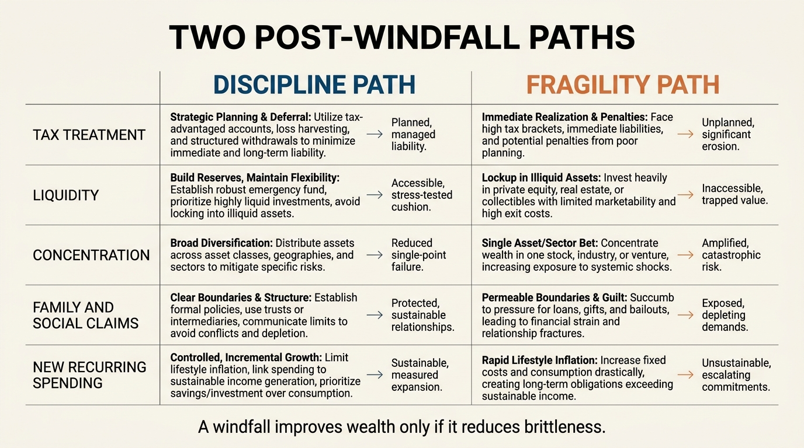

The Windfall Misallocation Problem
A windfall looks like proof of arrival. In practice it is usually a stress test of decision quality. Inheritances, equity vesting events, legal settlements, business exits, and sudden bonus years often fail not because the sum was too small, but because recipients treat one-time liquidity as evidence of permanent financial strength.
The result is a recurring pattern. Taxes are underestimated, reserves stay too thin, concentrated exposures are left untouched, new fixed spending is added too fast, and the social meaning of the windfall starts shaping choices before the balance sheet has been redesigned. Years later the household still has some benefit from the event, but far less resilience than the headline number once implied.
Core thesis: the windfall misallocation problem is not mainly about greed or recklessness. It is about category error. Households confuse episodic capital with recurring income, nominal gain with spendable gain, and emotional relief with durable financial capacity.

Windfalls Feel Larger Than They Are
Most windfalls are mentally booked at gross value. The household sees the headline before it sees tax drag, delayed liabilities, illiquid components, existing debt, family claims, or the reserve gap that should have been filled long before the event arrived. A two-million-dollar exit is not two million dollars of new free choice if tax, debt, and operating obligations absorb a large share on contact.
This matters because first allocations anchor later behavior. If the household starts from the fiction that the full gross number is available for lifestyle expansion or high-conviction bets, every downstream decision inherits that distortion. The same problem appears in a smaller form with annual bonus years and concentrated stock vesting. The capital arrives with a story attached, and the story often exaggerates what has actually been earned in spendable, durable terms.
One-Time Liquidity Is Not Permanent Income
The sharpest error is to convert a capital event into recurring obligations too quickly. New housing, private-school commitments, support for relatives, staffing, club expenses, and speculative side ventures all create future claims on the balance sheet. Once fixed costs rise, the original windfall stops being a source of optionality and becomes a hidden subsidy for a larger burn rate.
This is why windfalls belong in the same structural frame as The Opportunity Cost of Cash and The Asset-Rich, Cash-Poor Paradox. The central question is not whether capital arrived. It is whether the household turned that capital into a more governable system or into a more expensive life that still depends on fragile future performance.
Misallocation Usually Happens In Sequence
Windfalls often decay through an ordered set of mistakes rather than one dramatic blowup. First comes false urgency. The household feels pressure to act because unallocated cash appears irresponsible. Then comes overconfidence. Recent success or sudden relief is read as proof of superior judgment. Then come correlated bets, because the same narrative that created the windfall keeps attracting more capital. Finally comes spending normalization. The exceptional event gets translated into a new baseline.
This sequence explains why many recipients never feel reckless while they are misallocating. Each decision looks individually plausible. Together they convert flexible capital into higher correlation, lower liquidity, and a narrower recovery path if the next shock arrives.
| Windfall stage | Common decision error | Why it weakens the household |
|---|---|---|
| Receipt | Anchor on gross proceeds | Overstates what is actually free to deploy after taxes, fees, and obligations |
| First allocation | Skip reserve and liability cleanup | Leaves the old fragility in place while attention shifts to new opportunities |
| Reinvestment | Double down on familiar concentrated exposures | Extends the same sector, geography, or business risk that produced the event |
| Lifestyle reset | Convert windfall into fixed annual spending | Turns a one-time gain into a lasting dependency on future income or asset sales |
Social Pressure Converts Capital Into Leakage
Windfalls are social events as much as financial ones. Friends, relatives, co-founders, and professional advisers all infer new capacity, and the recipient often does the same. Generosity may be justified. The mistake is to distribute capital before the household has defined its post-windfall architecture. Open-ended support, informal loans, and symbolic purchases can consume far more optionality than they appear to at the time.
This is also where inheritance and family-transfer dynamics become difficult. Articles like The Inheritance Illusion matter because transferred wealth is rarely just cash. It arrives with expectations, uneven timing, identity pressure, and sometimes the urge to prove worthiness through visible action. Visibility is usually the enemy of disciplined first allocation.

What A Decision-Grade Windfall Protocol Looks Like
A decision-grade protocol begins with subtraction, not aspiration. Calculate after-tax proceeds. Ring-fence known liabilities. Fill reserve requirements. Remove expensive debt that constrains future flexibility. Reduce concentrated exposure if the household is still overdependent on one asset, one employer, or one business regime. Only after those steps should the recipient debate long-horizon investment policy or discretionary purchases.
The sequence matters because every early mistake narrows the useful option set. A household that secures liquidity, lowers correlation, and stabilizes spending can afford patience. A household that treats the windfall as a mandate for immediate action often loses the ability to choose slowly precisely when slow choice would have been most valuable.
- Model the windfall on an after-tax basis before discussing returns.
- Protect optionality by funding reserves and near-term obligations first.
- Reduce old concentration before adding new concentrated risk.
- Delay permanent lifestyle upgrades until the new balance-sheet structure is stable.
- Write a deployment policy before family, social, or adviser pressure reframes the decision.
Why Windfall Discipline Is Really A Governance Question
Windfall outcomes are often framed as intelligence tests. They are better understood as governance tests. The relevant skill is not heroic security selection. It is the ability to redesign the household so that a rare capital event improves future decision quality instead of making future mistakes more expensive.
That is why this topic belongs beside concentration discipline, liquidity design, and household optionality. Wealth is not strengthened by a windfall alone. It is strengthened when the windfall makes the balance sheet less brittle, less correlated, and less dependent on another lucky event.
Known, Inferred, And Unknown
| Category | Assessment |
|---|---|
| Known | Households routinely misperceive irregular cash events by focusing on gross value, recent emotion, and visible consumption opportunities rather than after-tax deployable capital. |
| Known | Liquidity, concentration, leverage, and fixed spending determine whether a capital event creates long-term resilience or simply finances a larger fragility structure. |
| Known | Behavioral-finance evidence supports the broader pattern that recent gains, mental accounting, and social framing can distort capital-allocation judgment. |
| Inferred | Many disappointing windfall outcomes result less from a single bad investment than from premature lifestyle resets and the failure to preserve optionality during the first allocation phase. |
| Unknown | Which advisory and household governance structures most reliably protect windfall recipients from social leakage, concentration relapse, and spending normalization across different income bands and asset types. |
Source Frame
This analysis relies on durable planning structure rather than a new market event: household-balance-sheet logic, behavioral-finance work on mental accounting and gain framing, and practical advisory lessons from inheritance, liquidity, and founder-liquidity transitions.
The unresolved issue is not whether windfalls can be transformative. It is how often recipients can protect the one-time option from being dissolved into taxes, concentration, social leakage, and permanent spending before a durable capital policy is in place.